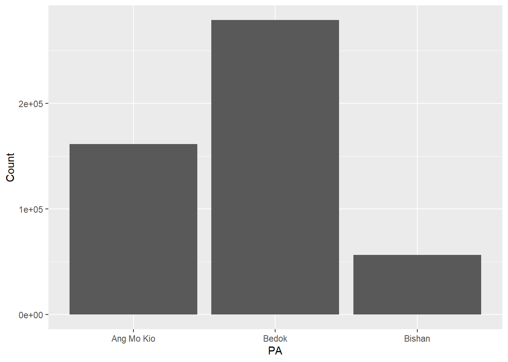
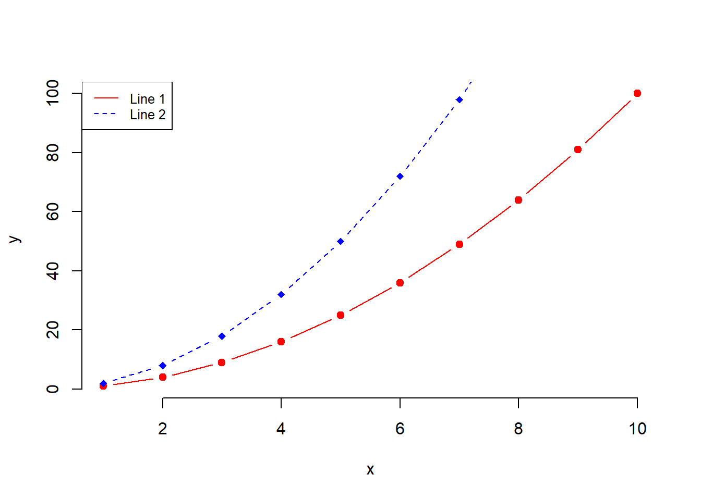
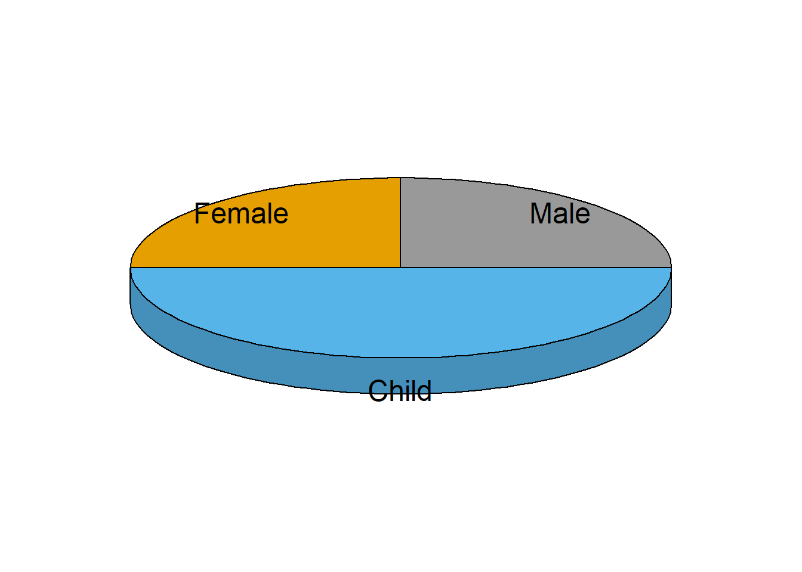

Show the code
pacman::p_load(tidyverse, readxl, knitr, plotly, skimr, questionr, funModeling, ggplot2)December 28, 2022
This study explores the Pyramid chart using ggplot2 and supporting R packages.
The age group variable, “AG”, is a character data type.
If it is used to plot the population pyramid, “10_to_14” will be parsed first instead of “5_to_9” after “0_to_4 is parsed.
Because of that, the order in the chart will be incorrect.
Resolve manually with these functions - mutate( ) and arrange( ).
The following are the packages required for this exercise :
Usage of the code chunk below :
p_load( ) - pacman - to load packages into R environment. This function will attempt to install the package from CRAN or pacman repository list if it is not installed.
Remarks :
Packages to consider -
sf, tidyverse, questionr, janitor, psych, ggplot2, gcookbook, tmap, ggpubr, egg, corrplot, gtsummary, regclass, caret, heatmaply, ggdendro, cluster, factoextra, spdep, ClustGeo, GGally, skimr, stringr, funModeling, knitr, caTools, viridis, rgeoda, cowplot, patchwork.
Singstat Dataset for Population
Two (2) steps : import and inspect imported data set.
Usage of the code chunk below :
read_csv( ) - readr - to read CSV file into a tibble.
problems( ) - readr - to reveal any parsing errors when importing the CSV file.
Rows: 75696 Columns: 7
── Column specification ────────────────────────────────────────────────────────
Delimiter: ","
chr (5): PA, SZ, AG, Sex, FA
dbl (2): Pop, Time
ℹ Use `spec()` to retrieve the full column specification for this data.
ℹ Specify the column types or set `show_col_types = FALSE` to quiet this message.# A tibble: 0 × 5
# … with 5 variables: row <int>, col <int>, expected <chr>, actual <chr>,
# file <chr>| Name | pop_sgp |
| Number of rows | 75696 |
| Number of columns | 7 |
| _______________________ | |
| Column type frequency: | |
| character | 5 |
| numeric | 2 |
| ________________________ | |
| Group variables | None |
Variable type: character
| skim_variable | n_missing | complete_rate | min | max | empty | n_unique | whitespace |
|---|---|---|---|---|---|---|---|
| PA | 0 | 1 | 4 | 23 | 0 | 55 | 0 |
| SZ | 0 | 1 | 4 | 29 | 0 | 332 | 0 |
| AG | 0 | 1 | 6 | 11 | 0 | 19 | 0 |
| Sex | 0 | 1 | 5 | 7 | 0 | 2 | 0 |
| FA | 0 | 1 | 4 | 13 | 0 | 6 | 0 |
Variable type: numeric
| skim_variable | n_missing | complete_rate | mean | sd | p0 | p25 | p50 | p75 | p100 | hist |
|---|---|---|---|---|---|---|---|---|---|---|
| Pop | 0 | 1 | 53.89 | 137.6 | 0 | 0 | 0 | 40 | 2210 | ▇▁▁▁▁ |
| Time | 0 | 1 | 2022.00 | 0.0 | 2022 | 2022 | 2022 | 2022 | 2022 | ▁▁▇▁▁ |
Remarks :
Preliminary data interpretation - based on 2022 consensus data, .
Compute the frequency count by “age” and “sex”.
Usage of the code chunk below :
group_by( ) - dplyr - to group Singapore population by age and gender.
summarise( ) - dplyr - to count the number of residents for each group.
arrange( ) - dplyr - to sort the rows in descending order of the counted “Returned” value of each “Sub-category”.
order <- c("0_to_4", "5_to_9", "10_to_14", "15_to_19", "20_to_24", "25_to_29", "30_to_34", "35_to_39", "40_to_44", "45_to_49", "50_to_54", "55_to_59", "60_to_64", "65_to_69", "70_to_74", "75_to_79", "80_to_84", "85_to_89", "90_and_over")
pop_agSx <- pop_sgp %>%
group_by(`AG`,`Sex`) %>%
summarise(`Count` = sum(`Pop`)) %>%
mutate(AG = factor(AG, levels = order)) %>%
arrange(AG) %>%
ungroup()`summarise()` has grouped output by 'AG'. You can override using the `.groups`
argument.# A tibble: 6 × 3
AG Sex Count
<fct> <chr> <dbl>
1 0_to_4 Females 87370
2 0_to_4 Males 91170
3 5_to_9 Females 98430
4 5_to_9 Males 103530
5 10_to_14 Females 99450
6 10_to_14 Males 103350# A tibble: 3 × 2
PA Count
<chr> <dbl>
1 Ang Mo Kio 161440
2 Bedok 278870
3 Bishan 56380`summarise()` has grouped output by 'PA'. You can override using the `.groups`
argument.# A tibble: 6 × 3
PA Sex Count
<chr> <chr> <dbl>
1 Ang Mo Kio Females 84340
2 Ang Mo Kio Males 77100
3 Bedok Females 143760
4 Bedok Males 135110
5 Bishan Females 28880
6 Bishan Males 27500# A tibble: 6 × 5
PA Sex Count male female
<chr> <chr> <dbl> <lgl> <lgl>
1 Ang Mo Kio Females 84340 FALSE TRUE
2 Ang Mo Kio Males 77100 TRUE FALSE
3 Bedok Females 143760 FALSE TRUE
4 Bedok Males 135110 TRUE FALSE
5 Bishan Females 28880 FALSE TRUE
6 Bishan Males 27500 TRUE FALSE The row.names( ) function is deprecated for Tibbles.
Hence, convert tbl_df to data.frame first with as.data.frame( ) function. Then, replace the row names with .rowNamesDF( ) function.
as.data.frame - base
.rowNamesDF - base
Usage of the code chunk below :
geom_col( ) - ggplot2 - to create the bar chart with the bar length represent the actual population stats.
scale_x_continuous( ) - ggplot2 - to modify the labels on the x-axis to provide better readability.
ifelse( ) - base - to convert population count of Male residents to be negative, so that their data will be plotted on the left side of the pyramid.
pyramid_agSx <- ggplot(pop_agSx,
aes(x = ifelse(Sex == "Males",
yes = -Count,
no = Count),
y = AG,
fill = Sex)) +
geom_col() +
scale_x_continuous(breaks = seq(-150000, 150000, 50000),
labels = paste0(
as.character(
c(seq(150, 0, -50),
seq(50, 150, 50))),
"k")) +
labs (x = "Population",
y = "Age",
title = 'Singapore Age-Sex Population Pyramid 2022') +
theme_bw() +
theme(axis.ticks.y = element_blank()) +
scale_fill_manual(values = c("Males" = "lightblue",
"Females" = "lightpink"))
pyramid_agSxRemark :
The pyramid above shows the younger generation’s lower percentage, making Singapore’s population structure a constrictive type. That means an ageing population.
By June 2022, 4.07 million residents population with a median age of 42.1,1 which is approximately a 19% increase from the median age of 35.3 back in the year 20022.
Also, another observation is from 25 age onward, the female population is higher than the male population. As of 2020, Singapore’s adjusted gender pay gap (GPG) is at 6%3.
Measures and new schemes may be required to further narrow the gender pay gap and encourage the birth rate or may have long-lasting socio-economic repercussions.

beside = FALSE, stacked bar (output same as above); TRUE , juxtaposed bars.
# Create a first line
plot(x, y1, type = "b", frame = FALSE, pch = 19,
col = "red", xlab = "x", ylab = "y")
# Add a second line
lines(x, y2, pch = 18, col = "blue", type = "b", lty = 2)
# Add a legend to the plot
legend("topleft", legend=c("Line 1", "Line 2"),
col=c("red", "blue"), lty = 1:2, cex=0.8)
group value
1 Male 25
2 Female 25
3 Child 50plotix::pie3D( )

4.4.3 Explode 3D Pie Chart
len supp dose
1 4.2 VC 0.5
2 11.5 VC 0.5
3 7.3 VC 0.5
4 5.8 VC 0.5
5 6.4 VC 0.5
6 10.0 VC 0.5
Attaching package: 'gplots'The following object is masked from 'package:plotrix':
plotCIThe following object is masked from 'package:stats':
lowessWarning in plot.xy(xy.coords(x, y), type = type, ...): "frame" is not a
graphical parameterWarning in axis(1, at = 1:length(means), labels = legends, ...): "frame" is not
a graphical parameterWarning in plot.xy(xy.coords(x, y), type = type, ...): "frame" is not a
graphical parameterWarning in text.default(x, y, label = labels, col = col, ...): "frame" is not a
graphical parameterWarning in plot.xy(xy.coords(x, y), type = type, ...): "frame" is not a
graphical parameterWarning in axis(1, at = 1:length(means), labels = legends, ...): "frame" is not
a graphical parameterSingstat. (2022). Population Dashboard. https://www.singstat.gov.sg/find-data/search-by-theme/population/population-and-population-structure/visualising-data/population-dashboard↩︎
Singstat. (2002). Indicators On Population. https://tablebuilder.singstat.gov.sg/table/TS/M810001↩︎
Ministry of Manpower. (2020). Report: Singapore’s Adjusted Gender Pay Gap. https://stats.mom.gov.sg/Pages/Singapores-Adjusted-Gender-Pay-Gap.aspx↩︎